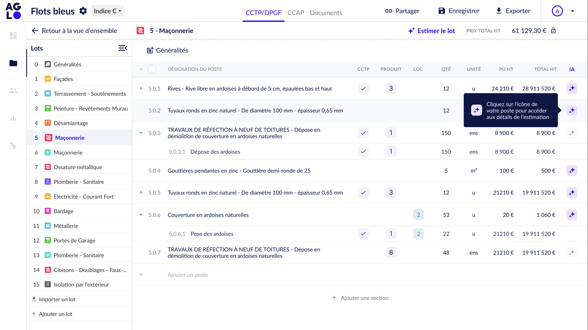
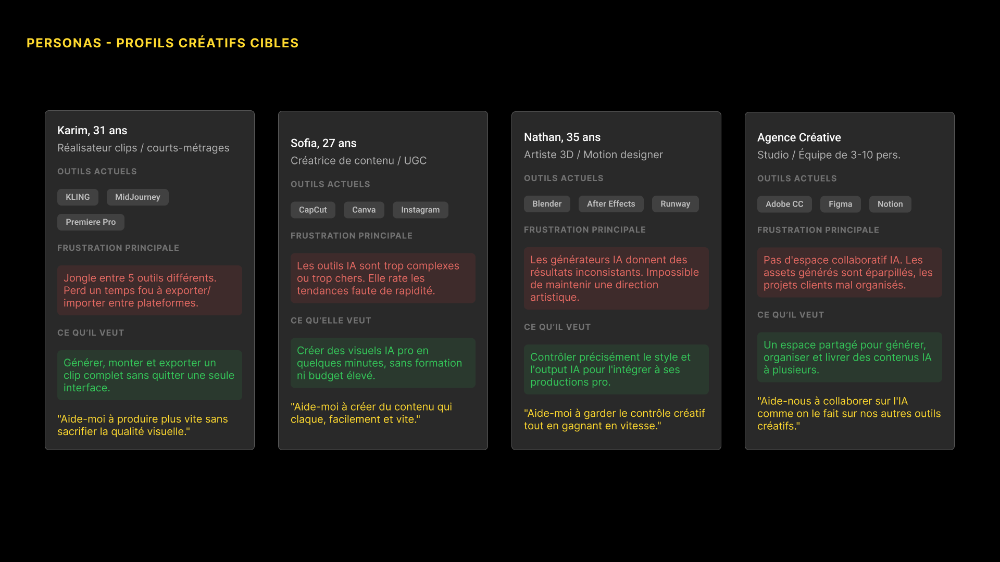
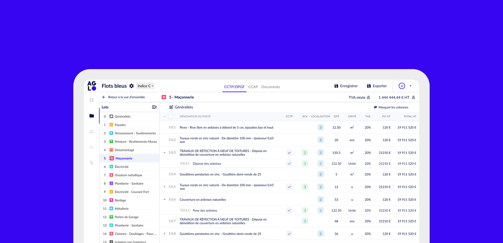
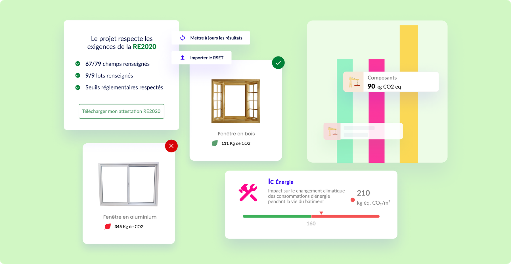
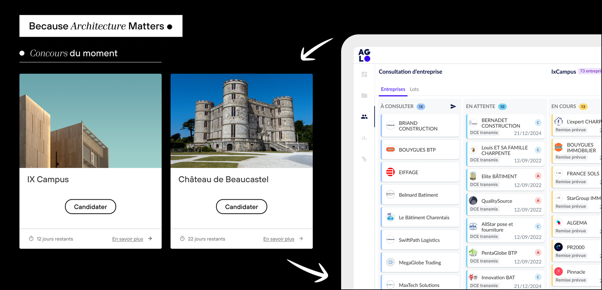
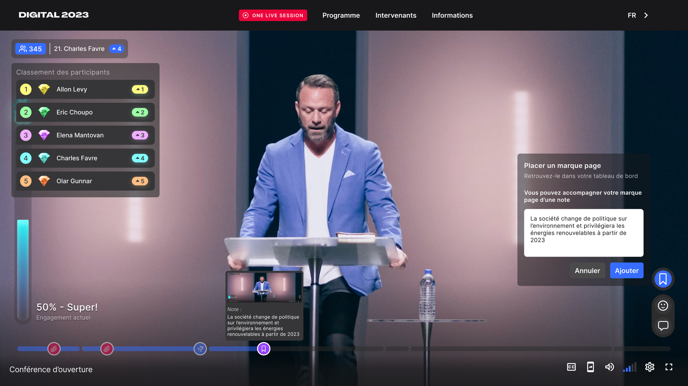
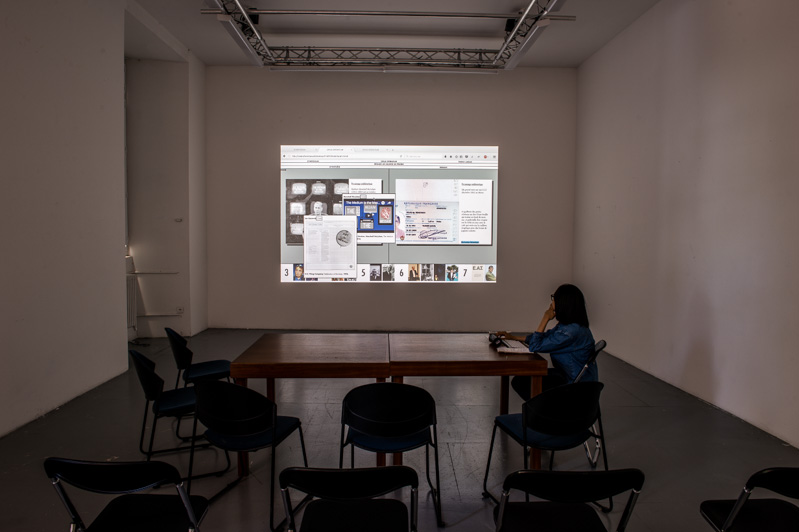

Un side project, né d'un problème vécu tous les jours, devenu la feature IA la plus adoptée d'AGLO.

Mission de conseil pour une plateforme IA de création visuelle : comprendre un public de créateurs, puis doter une équipe d'experts d'une méthode produit.
Étude de cas →
249 vs 121 créations de projet en un an, après refonte de l'écran d'accueil et mise en place de templates guidés.
Étude de cas →
Module de calcul carbone pensé pour la RE2020, certifié par la DHUP.

Un module de consultation adaptable à toutes les envergures de projet, de la maison individuelle au campus de 16 000m².
Étude de cas →
Le Twitch du BtoB : identifier qui sont les utilisateurs de demain d'une plateforme de live événementiel, et leurs besoins.
Voir la démarche complète →
E-commerce, identités visuelles, hackathons, développement front-end en start-up. Les débuts, en bref.
EstimAI, l'onboarding d'AGLO, l'Analyse de Cycle de Vie : rendre évident ce qui est complexe. Une obsession qui remonte à mon projet de diplôme, Symposium.
